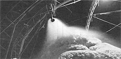

The Institute for Local Self Reliance works to help urban residents gain greater control over their lives through the use of low-technology, decentralist tools and concepts. Because we believe that city dwellers and country folks alike can profit from the institute's admirable efforts, we've made this "what's happening where" report by the ILSR staffers one of MOTHER'S regular features. If you would like to know more, you can have a free catalog of ILSR's selection of books and pamphlets by sending the institute a self-addressed, stamped envelope . . . or become an associate member for a tax-deductible $35 per year ($50 for institutions) and receive both a periodic report on the institute's work and a 20% discount on all the group's publications. Write to ILSR, Dept. TMEN, 1717 18th Street N. W, Washington, D. C. 20009.
Most solar entrepreneurs harness the sun's warmth. But Ted Taylor - a nuclear physicist who designed bombs at Los Alamos in the 1950's and now an alternative energy researcher - has turned his attention to the use of winter's cold. . . by storing that "coolth" in ice ponds.
Ted's frozen bodies of water - actually manmade "icebergs" - are created in winter so that, as they melt, they'll supply summer cooling (with assistance from underground conduction pipes) to nearby buildings. Perhaps the most noted of Ted's ice ponds is the one built for the Prudential Insurance Company's office complex not far from the campus of Princeton University.
Since the completion of that project, Taylor has been working steadily to refine and update his "coolers". In 1981 he and an engineering partner established a company, TDK, to design and install ice-pond systems . . . and right now, TDK is under commission to develop one of the frozen lakes for a dairy in western New York state. Because cooling is needed year round in the milk business, and because there are a lot of dairies in this chilly region, Ted hopes that the upstate New York area will provide fertile testing grounds for the business.
Now, besides continuing to explore the summer cooling potential of his revolutionary lakes, the physicist/environmentalist is also investigating the possibility that ice ponds could provide drinking water from the sea! This idea may have special merit for northern coastal towns (where there's limitless "raw material", of course) ... especially those already suffering a shortage of pure water.
Put simply, Ted's theory is that when salt water starts to freeze - at about 29°F - the first ice crystals to form will be relatively salt-free. Then, if the still-unfrozen, saline-heavy liquid can be drained off, the nearly saltless ice can serve as a stockpile of fresh water for human consumption.
The concentration of salt in seawater is about 30,000 parts per million. But once the ice crystals have formed - if the process is controlled to keep the "fresh" water solid and the "waste" salt solution liquid - what's left will be blocks of ice with an overall salt content well below the 250 parts per million that's generally considered acceptable for drinking.
With the help of the Institute for Local Self-Reliance, Ted and his associate, Jack Gleason, have come up with a design for just such a coastal "drinking pool" in New Jersey. The concept involves creating some two and a half million tons of frozen H 2 O . . . in a pile that would be about 200 feet high and cover a land area bigger than a city block! Ted and Jack figure that about 50% of the ice would melt at a fairly constant rate over the course of a summer and that in August - when demand for air conditioning and thirst quenching is at its highest - the "ice mountain" could provide up to about 3.3 million gallons of pure water a day!
Obviously Ted Taylor's not going to have completely "smooth skating" in developing his urban glacier. In addition to the technical details that must be worked out, there's the question of who'd be willing to live in the vicinity of two and a half million tons of ice, since the humidity and temperature would likely be affected for blocks around.
However, folks are going to have to make some adjustments in the future in order to conserve energy and natural resources, and if those include living near a 200-foot-tall iceberg in the middle of Atlantic City . . . so be it!
|
 Photo by Marco Masoero The creation of the Prudential Insurance Company's ice pond during the winter of 1981. |
|
|